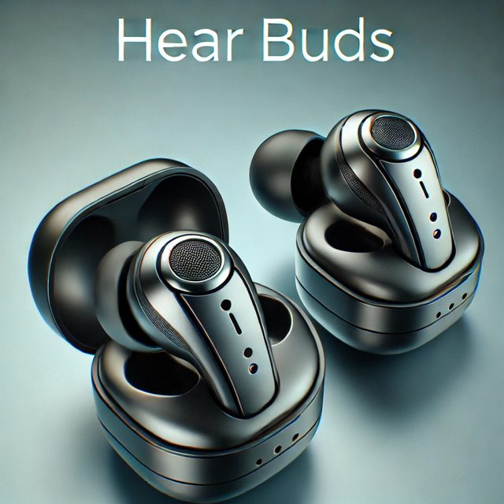
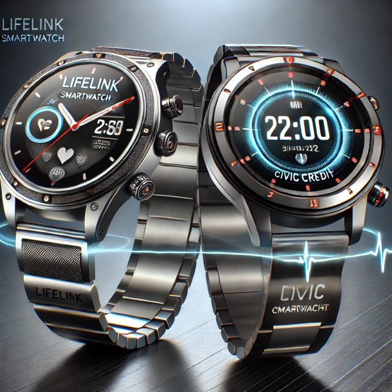
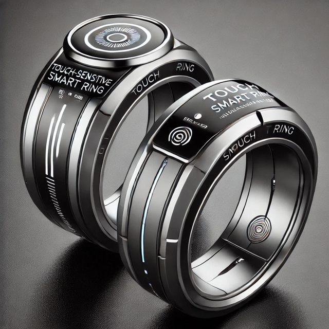

Instrument 3 of 3 · LifeLink
One link to every public service.
LifeLink gives every citizen a secure digital identity and wallet, free, on a phone they already own, a LifeLink tablet or a wearable. Through it people receive their Civic Credits, learn, see a doctor, call for help, and take part in government. No more paperwork, and no more getting lost between agencies.
What it does
Six services, one secure identity.
Try LifeLink today
LifeLink starts as software on the phone, tablet or computer people already own. The prototype shows what can be built now, with open standards, before any new hardware. It installs to your home screen, works offline, and keeps everything on your device, encrypted.
Open the LifeLink prototype Explore as a sample person, or create your own. Demonstration only: credits have no value, and nothing is sent to any authority.
A day with LifeLink
- 1MorningSign in with a fingerprint; today's credits, bills and health check at a glance.
- 2WorkJob matching, certifications from the AI teacher, and secure remote work.
- 3LearningA lesson plan built around your goals, from literacy to law.
- 4CommunityLocal projects that earn credits, events, and fact-checked news.
- 5EveningFamily connections, a reading list, and a quiet check-in on your wellbeing.
The LifeLink family
LifeLink starts as an app and on the LifeLink Tablet ("The Link"), then grows into a family of wearables, each with its own technical specification.

Hear BudsVoice access to every service, with real-time translation and sound enhancement.
SmartwatchHealth monitoring, emergency SOS, Civic Credit payments and alerts on the wrist.
Touch Smart RingA biometric key: tap to pay, sign in securely, or double-tap for silent SOS.The pictures are AI-generated concept renderings; final products may differ.
Safety and security
LifeLink's safety features are among its most valuable, and its most debated. A device that can call for help could also be used to watch. So every feature comes with the rule that keeps it on the right side of that line.
- Emergency responseAfter an accident or a fall, LifeLink calls emergency services and alerts the people you have chosen. The rule: You choose who is alerted. Your location is shared only for the emergency, then stops.
- Silent SOSA double-tap on the ring, or a distress signal from the watch, quietly calls the police when speaking up isn't safe. The rule: Only you can trigger it. Nothing is listening or recording until you do.
- Crime reportingReport a crime by voice; the authorities are notified, and nearby witnesses can choose to help. The rule: Reports are logged and auditable, with protections against false reports. Witnesses take part only if they agree.
- Threat alertsAlerts about incidents reported near you, such as a fire, a flood or a crime in progress. The rule: Alerts are sent to an area and your device decides if you're in it. Your location goes nowhere.
- Biometric identitySign in, pay and prove who you are with a fingerprint, face or iris. The rule: Your biometrics stay on your own device and are never kept in a central database. A non-biometric option and a human override always exist.
From LifeLink Daily Implementation, The LifeLink Tablet and the Crisis Management and Security Protocols.
Every person counted, no person tracked
Running a country can feel like an endless list of problems and costs. Much of that is not the cost of care itself, but not knowing who needs what: the same person registered by six agencies, payments leaking to names that don't exist, people falling through the gaps until they become emergencies. When every person is counted, an endless problem becomes a budget: this many people in this area need housing, care or training.
Counting doesn't make a hospital cheaper. What it removes is waste, duplication and late, expensive crises. LifeLink is designed to keep that gain without becoming a tool for watching people:
- Know needs, not movementsPlanners see totals, such as how many people in an area need housing, care or training. Personal details are used only to serve that person, with their consent.
- Voluntary, and never a gateJoining is a choice. No one is refused food, care or a payment because a device failed or they don't have one; a person can always override the system.
- Data stays with the personCollect the minimum, keep it in separate systems rather than one central store, and let every person see who has looked at their record.
- Safety you switch onDistress signals are triggered by the user, not by constant watching. Any request involving the police is overseen by the independent Ethical and Security Council and reported publicly.
Safeguards first
A system this close to people's lives has to earn their trust. These rules are written into the design.
- No one shut outVoluntary to join, and no one is ever refused food, care or a payment because a device failed or they don't have one. A person, such as staff at a Poverty Elimination Center, can always step in.
- You own your dataOpt out, delete or move your records at any time; personal and health data kept out of public ledgers.
- AI that assists, never rulesEvery AI decision must be explainable, publicly auditable, reversible and under human oversight.
- Three bodies of oversightAn Ethical and Security Council for privacy and AI, a Public Assembly for citizens' say, and an Economic and Development Board for finances.
- Works when systems failOffline ID, peer-to-peer mesh networking, solar-powered devices and satellite access in emergencies.
- Built to privacy lawDesigned to meet GDPR, CCPA and ISO security standards, with encryption designed to resist future quantum attacks.
- For people without papersDigital identity for refugees and displaced people, so no one is shut out of help.
Detailed in the Ethical AI and Data Privacy Framework, the Legal and Ethical Safeguards Framework and the Core Specification.
The roadmap
Phased, so each layer proves itself before the next is added.
- Years 1–2Launch the core servicesThe creative hub, AI teacher, civic hub, safety and health modules, on phones and certified devices; partnerships with device makers.
- Years 2–3Economy and governanceLifeLink recognised as official digital ID in early-adopting nations; Civic Credits and PEC systems connected.
- Years 3–5Global standardCross-border Civic Credit recognition, participatory-democracy tools, and PEC infrastructure worldwide.
- By 2030Devices in handThe 2025 edition's first-phase target: 2 million LifeLink tablets and 5 million wearables.
The working papers
Read every document
32 papers, about 26k words, free to read in full, including 23 strategies covering everything from funding and hardware to health, education, governance and crisis response. The complete LifeLink Master Plan (PDF) gathers them in one volume. Each one has a plain-text copy, and most have the original PDF.
These papers were written in 2024 and 2025 as the plan developed. Where one differs from the 2025 edition of the Plan, the 2025 edition is the current statement.
Start here
- The Future Begins with LifeLink An open letter to the citizens of the world
- LifeLink, Civic Credits and Poverty Elimination Centers: Synergy Proposal How the three instruments work as one system
- LifeLink Daily Implementation and Quality of Life A day with LifeLink, morning to evening
Design
- LifeLink Core Specification LifeLink is a transformative digital ecosystem designed to integrate identity verification, financial empowerment, civic engagement, education, and…
- The LifeLink Tablet Civic engagement and societal integration
Devices
- LifeLink Look Smart Glasses Technical specification and integration
- LifeLink Hear Buds Technical specification and integration
- LifeLink Smartwatch Technical specification and integration
- LifeLink Touch Smart Ring Technical specification and integration
Building and funding it
- LifeLink Development and Execution Plan This document outlines the step-by-step execution strategy for LifeLink, beginning September 9, 2025.
- LifeLink Technical Development Roadmap The LifeLink Technical Development Roadmap outlines the system architecture, software and hardware development phases, security protocols, and…
- LifeLink Hardware and Infrastructure Deployment Plan To ensure LifeLink’s secure, scalable, and sustainable rollout, this document outlines the hardware specifications, manufacturing strategy,…
- LifeLink Funding and Sustainability Model LifeLink requires a scalable, self-sustaining financial model to support its development, deployment, and long-term global adoption.
- LifeLink Economic and Market Integration Strategy The LifeLink Economic & Market Integration Strategy outlines how LifeLink and Civic Credits will integrate into local and global economies, financial…
- LifeLink Interoperability and Cross-Platform Integration Plan LifeLink is designed to seamlessly integrate with existing government, financial, and digital systems, ensuring smooth adoption and interoperability…
Serving people
- LifeLink Education and Digital Literacy Strategy LifeLink is committed to expanding access to quality education, workforce development, and digital literacy training worldwide.
- LifeLink Health and Wellness Strategy LifeLink is committed to enhancing global healthcare accessibility, integrating telemedicine solutions, and promoting mental wellness through…
- LifeLink Community and Social Impact Strategy LifeLink is designed to empower communities, enhance social participation, and create inclusive economic opportunities.
- LifeLink Humanitarian and Global Aid Strategy LifeLink is designed to support humanitarian aid, disaster relief, and crisis response by providing secure digital identity, financial aid…
- LifeLink Environmental Sustainability and Climate Action Plan LifeLink is committed to sustainability, carbon neutrality, and environmental responsibility.
- LifeLink User Experience and Public Training Guide LifeLink is designed to be intuitive, secure, and accessible for all users, regardless of technical proficiency.
Safeguards and governance
- LifeLink Ethical AI and Data Privacy Framework LifeLink is committed to ensuring ethical AI governance, bias prevention, and user data privacy.
- LifeLink Legal and Ethical Safeguards Framework LifeLink is committed to protecting user rights, ensuring ethical AI usage, and maintaining legal compliance across global jurisdictions.
- LifeLink Policy and Regulatory Compliance Framework To ensure LifeLink operates legally, ethically, and securely across various jurisdictions, it must align with international laws, data privacy…
- LifeLink Smart Governance and AI Policy Strategy LifeLink’s governance framework is designed to enhance transparency, citizen participation, and efficiency through AI-driven decision-making.
- LifeLink Crisis Management and Security Protocols LifeLink is designed to be resilient, secure, and capable of functioning in global crises, cyber threats, and political instability.
- LifeLink Cultural and Ethical Adoption Strategy LifeLink is designed to be globally inclusive, ensuring that cultural diversity, ethical considerations, and regional sensitivities are respected in…
Growing worldwide
- LifeLink Global Civic Adoption Plan The LifeLink Global Civic Adoption Plan outlines how countries, institutions, and communities can integrate LifeLink while preserving sovereignty,…
- LifeLink Global Expansion and Strategic Scaling Plan LifeLink’s expansion strategy focuses on scalable, phased growth to integrate LifeLink into new markets, industries, and governance systems.
- LifeLink Strategic Partnership and Outreach Plan LifeLink’s success depends on strong strategic partnerships with governments, corporations, non-profit organizations, and academic institutions.
- LifeLink Public Communications and Media Strategy LifeLink’s success depends on widespread awareness, public trust, and strong engagement.
- LifeLink Impact Assessment and Measurement Plan To ensure LifeLink achieves its mission of digital identity, financial empowerment, and civic engagement, it is essential to measure success, track…
The other two instruments
Each instrument does one job. They are designed to work together.
Help build it.
The first pilots need funding, partners and people: the Civic Credits software, the first Poverty Elimination Centers, and LifeLink development.
The why
Why connect every person? Because every person matters: each one carries a portion of the Creator.
Follow the plan's progress.
Occasional updates on pilots, partners and milestones. Unsubscribe any time.
We'll only send what you signed up for. Privacy